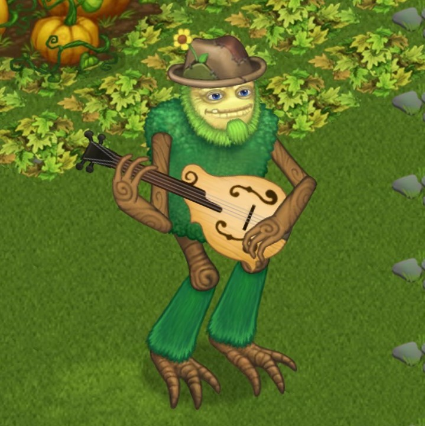

Featuring Kristian Bush of Sugarland
Despite originating from a warm climate, the kindly Shugabush is unusually furry. Its penchant for sweet treats is legendary, second only to its skill as a performer. The felt hat that adorns its head, which it has been overheard calling a Phay-door-uh, is one of its most prized possessions, alongside its trusty mandolin, of course. The Shugabush revels in jamming along with other Monsters and is a true embodiment of the spirit of collaboration.
